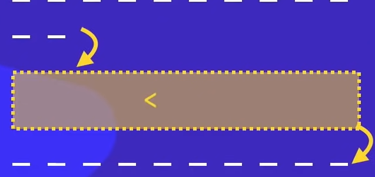
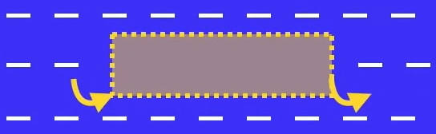
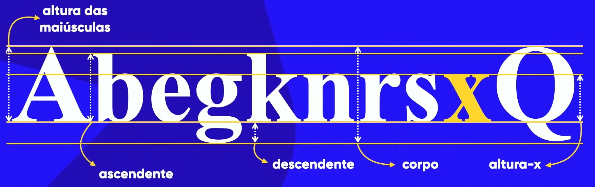
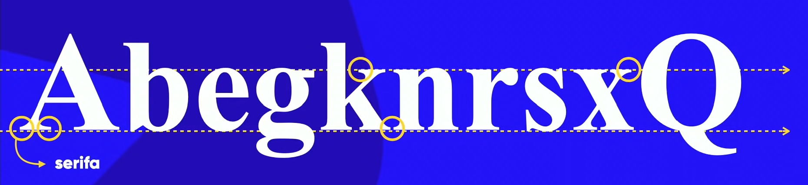
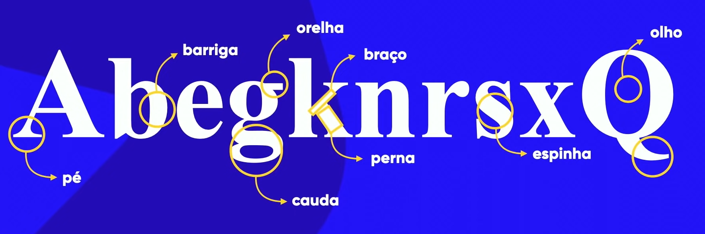

O que é CSS?
Cascading Style Sheet, mais conhecido como CSS, é uma linguagem de estilos que, assim como o HTML, também não é considerada uma linguagem de programação. Ela é responsável por separar a parte estrutural da aplicação (que ficará nas mãos do HTML) da parte estética.
Corpo Basico CSS:
<header>
<h1> titulo </h1>
</header>
<main>
<div> conteudo principal</div>
</main>
<footer>
<p>Marca Registrada© .</p>
</footer>
Variaveis no CSS:
Exemplos:
:root {
--cor0: #c5ebd6;
--cor1: #83e1ad;
--cor2: #3ddc84;
--cor4: #1a5c37;
--cor5: #063d1e;
--font-padrao: Arial, Verdana, Helvetica, sans-serif;
}
color: var(--cor4)
Tags para CSS
Global CSS: * {}
Regra para não ter problema com caracteres especiais: @charset "UTF-8";
Comandos para CSS:
- height: altura
- width: largura
- border: borda
- padding: preenchimento (distancia a borda do conteudo)
- margin: preenchimento para fora (distancia de uma borda para outra)
- outline: contorno externo (borda fora da borda)
- overflow-wrap: anywhere; : (Força a quebra de linha)
- overflow-x: hidden : (remove a Barra branca no site Mobile)
- line-heigth: (espaço entre uma linha pra outra)
Tipos de caixa:
caixa: Box-level

Tipos de box-level
- div
- h1 - h6
- p.
- main
- header
- nav
- article
- aside
- footer
- form
- video
caixa: inline-level

Tipos de inline-level
- span
- a
- code
- small
- strong
- em
- sup - sub
- label
- button
- input
- select
Class, id, subclass
Classes HTML e CSS
class HTML = . no css (Usar para mais de um comando.)
id no HTML = # no css (Não Usar para mais de um comando.)
pseudo-class no HTML= class: no css (Usar para momentos como passar o mouse.)
pseudo-elemento = :: CSS
children = > CSS
- podemos usar mais de uma casse por comando
- tambem podemos usar class e id no mesmo comando (o ID será computado por ultimo)
tambem podemos usar subclass para ocultar elementos internos e etc, Exemplo abaixo:
<h2>
Passe o Mouse aqui
<p> Surpresa </p>
</div>
h2 > p {
display:none;
}
h2:hover > p {
display:block;
background-color: red;
}
Passe o mouse aqui:
Surpresa!!!
Modelos de :hover
- a:visited (Altera quando o objeto foi clicado)
- a:hover (altera o Objeto quando o Mouse está por cima ou proximo)
- a:active (altera o Objeto quando ele é Clicado)
- a::after{content:} (depois de todos os objetos)
- a::before{content:} (antes de todos os objetos)
Bordas Decoradas
h1{
border:12px solid black;
padding: 10px;
border-image-source:url('borda.png');
border-image-slice: 27; //
(Editar pelo Navegador)
border-image-repeat:reset;
}
Estudo das Cores
PDF Sobre Cores: Cores
Os tipos de representação de cores são:
Hex: hexadecimal
background-color:: #0000ff RGB:Red,Green e Blue, alfa(transparência) color: RGBA
background-color: rgba(0, 0, 0, 0.233)
HSE: Hue(matrix), Sturation(saturação), Luminosity(Luminosidade) e Alfa(Transparência)
background-color: hsla(0, 0%, 0%, 0.233)Tipos de Cores são:
Primarias, segundarias e terciarias.
Sites para ver combinações de cores:
- Paletron
- AdobeColors
- Análogo
- Monocromático
- Triade
- Complementar
- Dividir complementar
- Dividir complementar duas vezes
- Quadrado
- Composto
- Sombras
Tipos de regra de harmonia:
Usando Gradient no CSS:
background-image: linear-gradient(to left,
red, rgb(255, 81, 0), rgb(255, 136, 0));
background-image: linear-gradient(45deg,
red 1%, rgb(255, 81, 0), rgb(255, 136, 0));
background-image: radial-gradient(circle,
red, rgb(255, 81, 0), rgb(255, 136, 0));
Fontes
Usando Link do Google:
@import url('https://fonts.googleapis.com/
css2?family=Patrick+Hand&display=swap');
Fontes baixadas.
@font-face{
font-family: love;
src: url('1fonte')
format('opentype');
, url('2 fonte) format('truetype')
font-weight: normal;
font-style: normal;
}
Para descobrir as fontes dos sites:
Extenção google chrome e firefox
Fonts Ninja
Extenção google Opera
Font Finder
Descobrir as fontes de fotos:
Sites:
Tipos de format()
- opentype (otf)
- truetype (ttf)
- embedded-opentype
- truetype-aat (apple Advanced typograph)
- svg
Medidas Absolutas:
cm, mm, in(polegada), px, pt, pc.
Medidas Relativas:
em, ex, rem, vw, vh, %,
PS:16px geralmente = 1em.
Usar px ou em é a recomendação Oficial.
Comandos Font:
- font-size= tamanho // 1em, 16px
- font-weight= peso // light, normal, bold, bolder
- font-style= estilo // italic
- text-decoration= decoração //underline
- font-family= familia // arial, etc...
- font:italic bolder 3em 'Work Sans', sans-serif
Anatomia e tipo:
PDF Sobre anatomia e tipo : Fontes

Serifa:

Anatomia geometricas:
Anatomia Humanizada:

Categorias de Fontes: